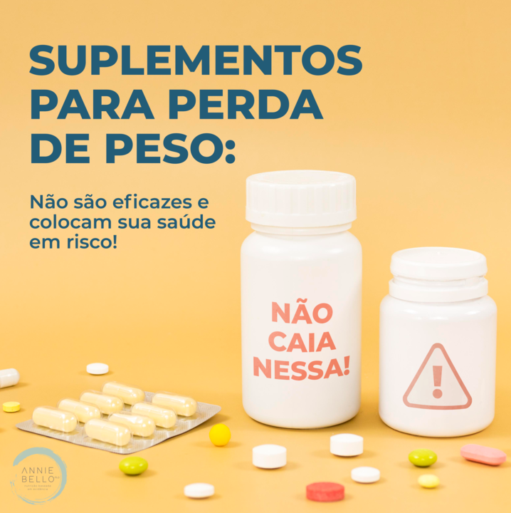

“Suplementos para emagrecer: não funcionam e colocam a saúde em risco!”
11 de Julho 2021 Nutrição com Evidência

Quando foi a última vez que ouviu falar em algum suplemento para perda de peso? Infelizmente, acredito que não tenha muito tempo. O que mais vemos por aí são promessas de emagrecimento em cápsulas. Elas vivem “pipocando” nas telas dos nossos celulares ou computadores, cada dia é um anúncio diferente chegando até nós.
O problema é que, além de não serem eficazes, esses suplementos ainda colocam a saúde em risco! Para mostrar tanto a ineficácia quanto o perigo, separei algumas referências:
Em 2020, foi publicada uma revisão sistemática com meta análise sobre a eficácia de medicamentos fitoterápicos para a perda de peso na revista Diabetes, Obesity and Metabolism. O artigo incluiu 54 ensaios clínicos randomizados, controlados por placebo. Entre as ervas analisadas estavam Camellia sinensis – o famoso chá verde, Garcinia cambogia e várias outras que costumam ser utilizadas com esse objetivo. E adivinhem: nenhuma promoveu perda de peso significativa.
Quando foi a última vez que ouviu falar em algum suplemento para perda de peso? Infelizmente, acredito que não tenha muito tempo. O que mais vemos por aí são promessas de emagrecimento em cápsulas. Elas vivem “pipocando” nas telas dos nossos celulares ou computadores, cada dia é um anúncio diferente chegando até nós.
O problema é que, além de não serem eficazes, esses suplementos ainda colocam a saúde em risco! Para mostrar tanto a ineficácia quanto o perigo, separei algumas referências:
Em 2020, foi publicada uma revisão sistemática com meta análise sobre a eficácia de medicamentos fitoterápicos para a perda de peso na revista Diabetes, Obesity and Metabolism. O artigo incluiu 54 ensaios clínicos randomizados, controlados por placebo. Entre as ervas analisadas estavam Camellia sinensis – o famoso chá verde, Garcinia cambogia e várias outras que costumam ser utilizadas com esse objetivo. E adivinhem: nenhuma promoveu perda de peso significativa.
Referências:
Bessell, E., Maunder, A., Lauche, R. et al. Efficacy of dietary supplements containing isolated organic compounds for weight loss: a systematic review and meta-analysis of randomised placebo-controlled trials. Int J Obes (2021). https://doi.org/10.1038/s41366-021-00839-w